The overall goal of the project is to extract the three color channels from a digitized Prokudin-Gorskii glass plate image and stack them on top of each other to form a single RGB color image. Note: we assume a simple x, y translation is enough for proper alignment.
Part 1
Given the digitized glass plate images, I first extracted the separate color channels: Blue, Green, and Red. Now the goal is to determine how we can best align the different channels to generate a clean RGB image. Thankfully there are multiple ways to align these color channels.
What this formula is essentially doing is removing any brightness offset by subtracting the mean, and dividing by the norms removes any differences in contrast. What is essentially left over is a measure of how well the two images’ patterns of light and darkness agree.
The naive implementation of this algorithm happened to not work well since the plate borders are black and washed out. This skewed the metric. As shown below.
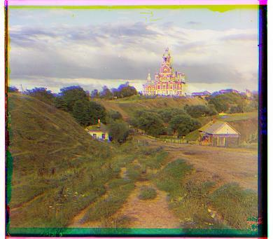
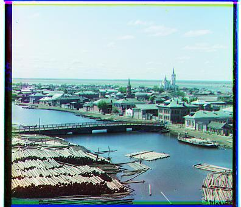
In order to get better results I cropped 15% off every edge before scoring. This allowed me to get rid of the plate borders and focus on aligning the actual image. The results are shown below as well as the corresponding best displacement vectors.
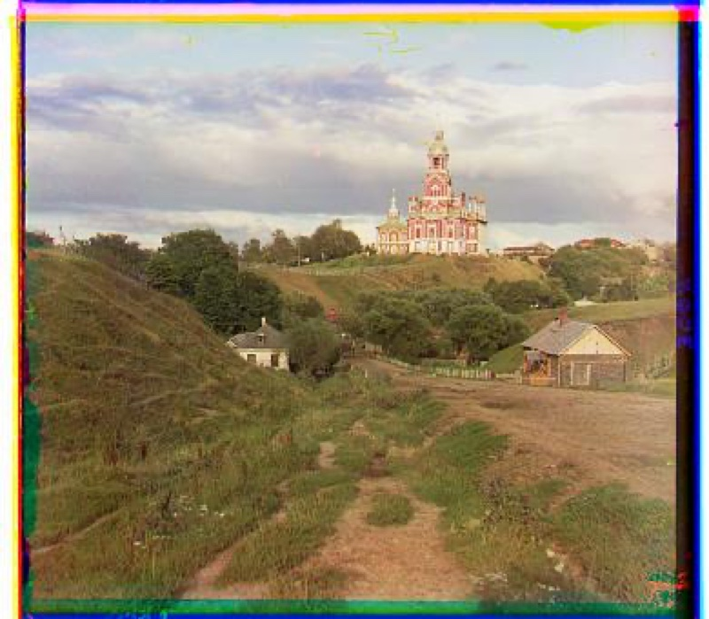
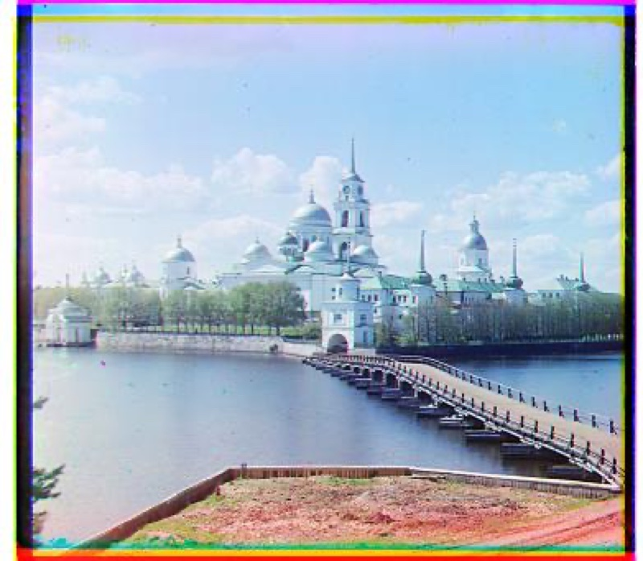
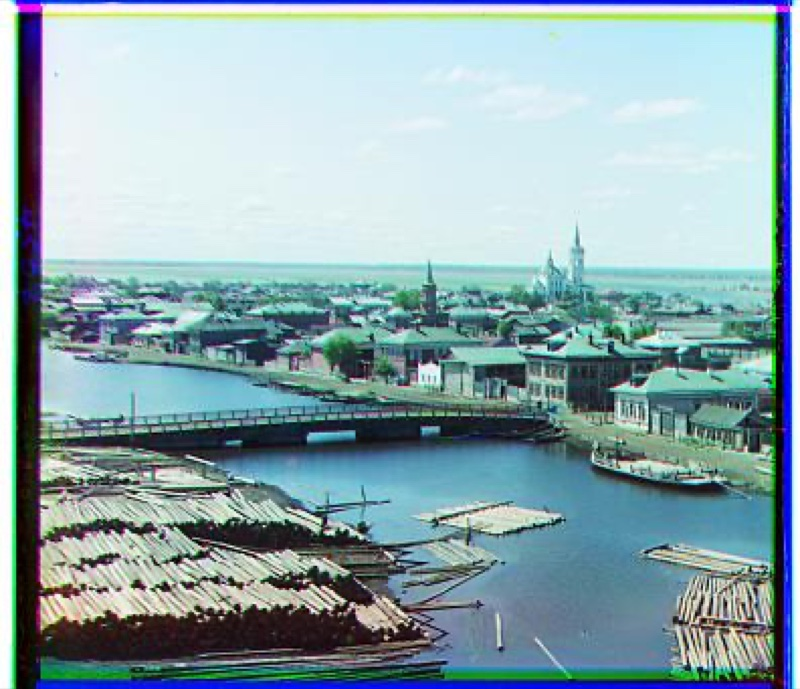
Part 2
The proposed algorithm in part 1 will become far too expensive to perform for full resolution plates. In order to remedy this issue we will leverage an image pyramid. An image pyramid allows us to perform the alignment on the coarsest images and fine-tune our displacement vector on more fine-grained images. However, since we are downsampling it is important for us to use the appropriate techniques to avoid aliasing.
The results are shown below as well as the corresponding best displacement vectors. Each offset is listed as the (row, column) shift applied to that channel to bring it onto the blue channel.
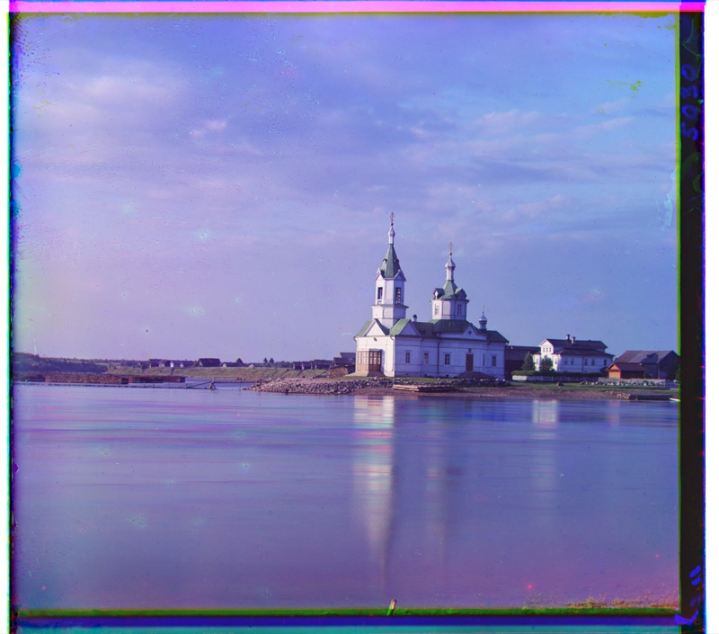
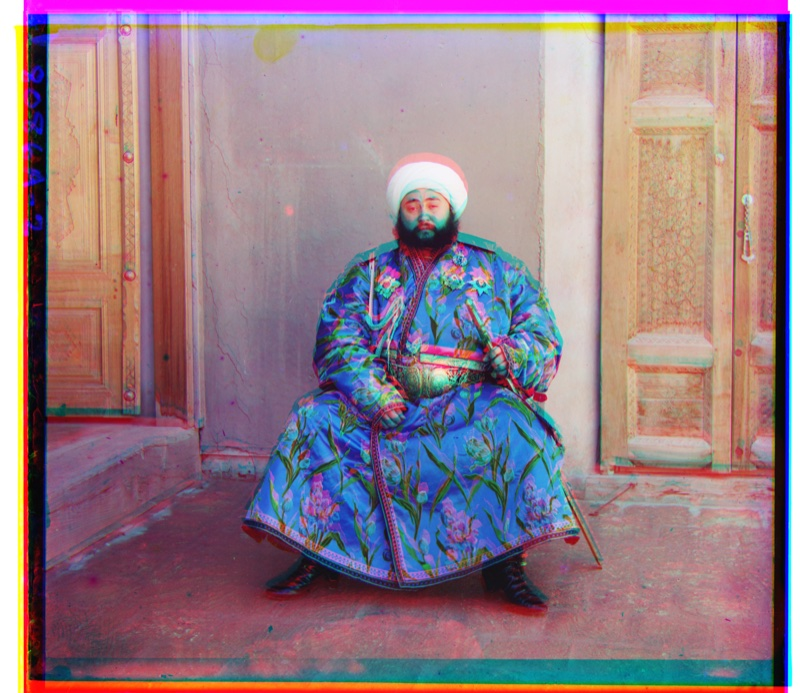
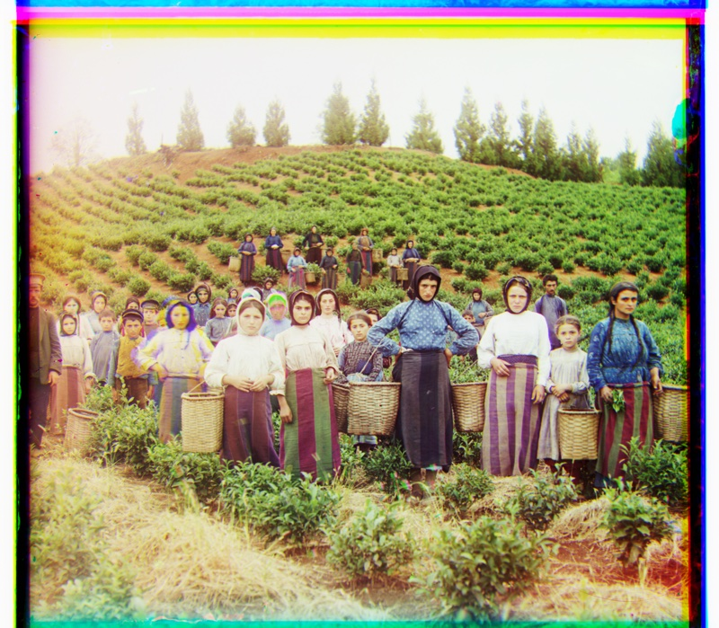
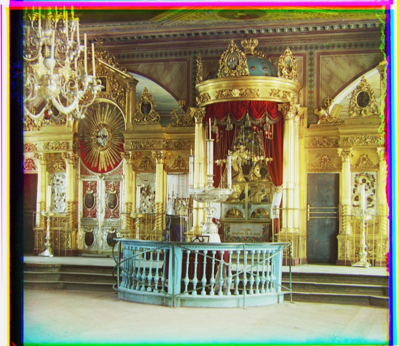
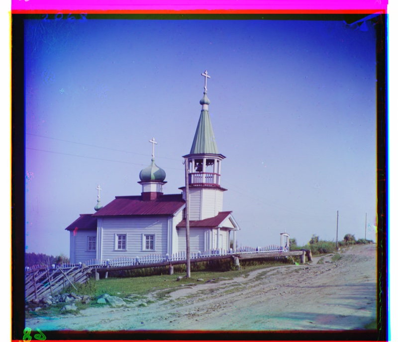
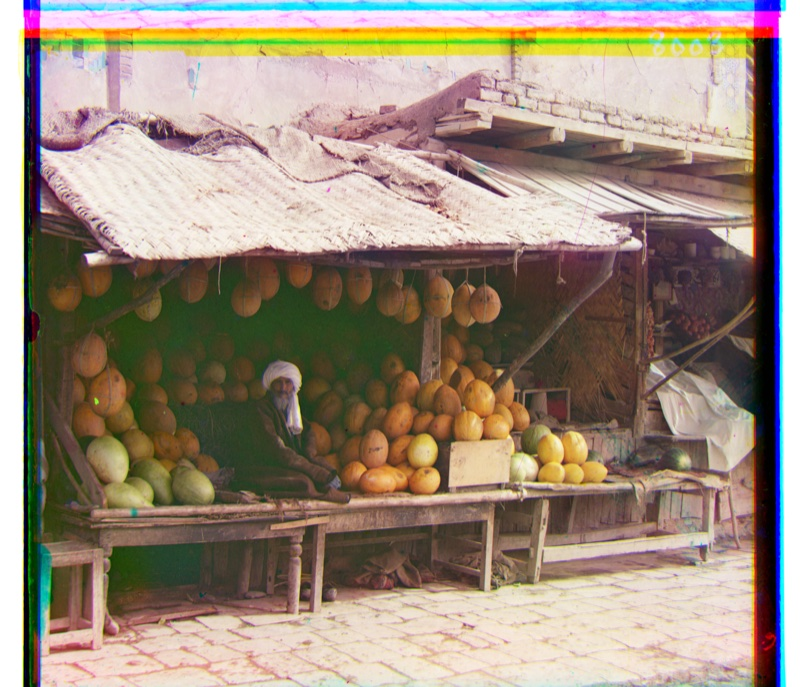
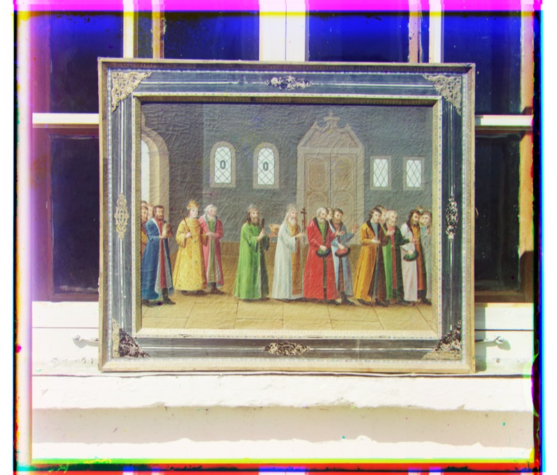
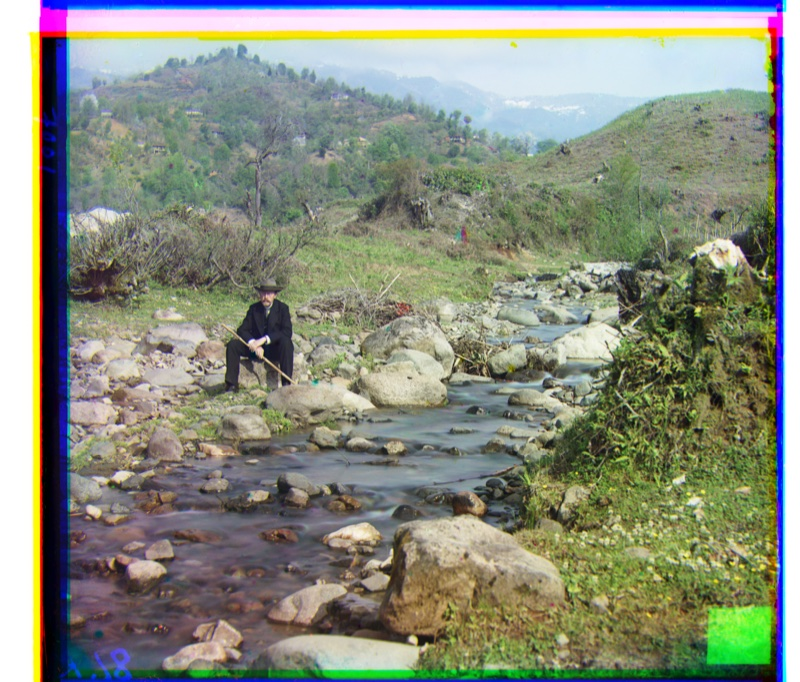
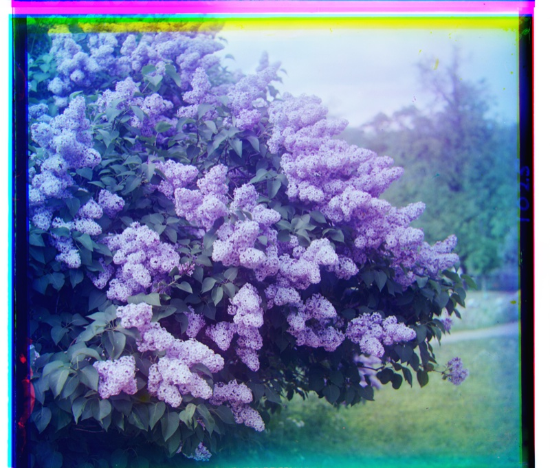
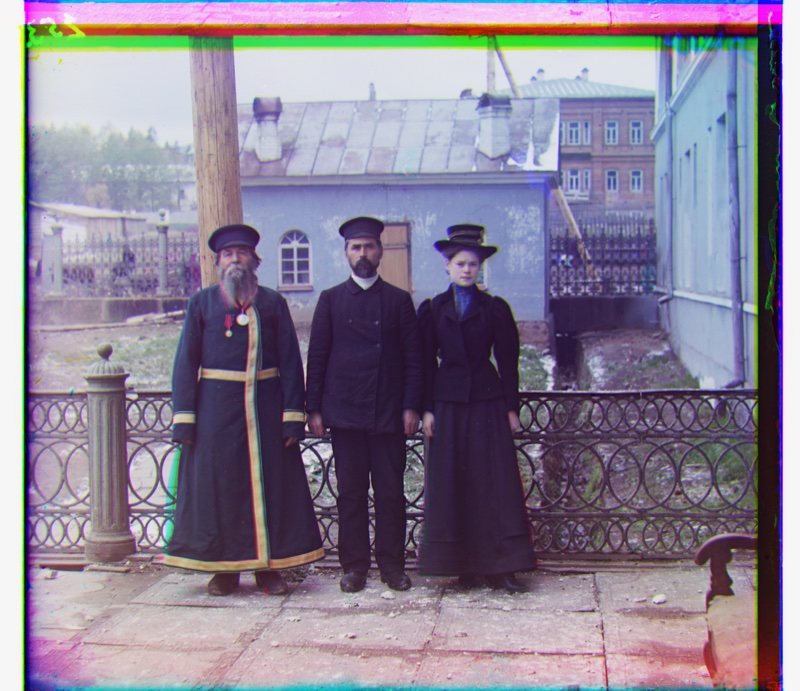
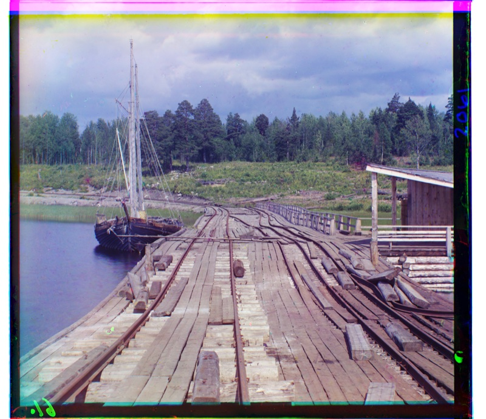
Part 3
This is a unique and challenging image since the color channels for Emir do not have the same brightness values. The robe he is wearing is blue which unfortunately causes the blue channel to brighten up and dulls the green and red channels. NCC cannot correct this because it is not a global shift in brightness but rather a discrepancy caused by the robe. This problem is made worse by using an image pyramid as when we start aligning at the coarse level, we remove the fine-grained details that are consistent throughout the image channels. This causes us to commit to a bad displacement vector. I tried seeing if expanding the set of displacement vectors would improve the result, but not much success was observed. This suggests the issue is not the size of the search window but the metric itself. NCC scored an incorrect displacement highest, so enlarging the search cannot recover the true alignment. We would have to match based on edges or gradients rather than brightness.
Part 4
I ran the multi-scale pyramid alignment on 3 more plates from the Prokudin-Gorskii collection. The results are shown below. The magenta look for image 2 is normal and expected, as seen in the original plate at the Library of Congress.
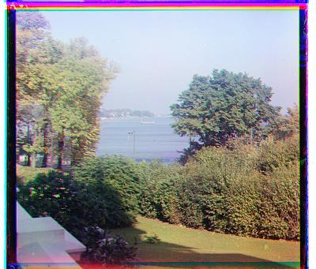
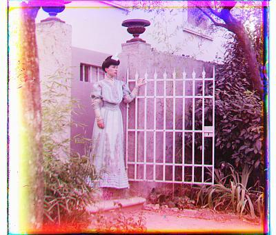
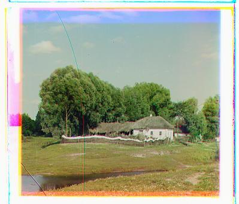